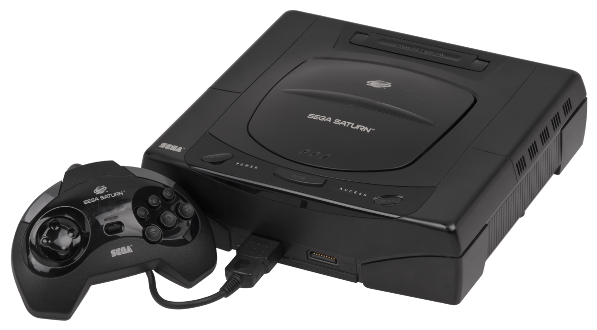

A 5ª Geração
Carlos Goering
A quinta geração dos consoles teve início em 1993 e trouxe grandes novidades visuais,
audíveis e de armazenamento, os jogos começaram a ter melhores áudios, a usar melhor
os polígonos, que até então eram exclusividades de alguns cartuchos com processador
gráfico próprio para tal função. Tudo isso foi possível, pela utilização de mídia de CD-
ROM, ou mesmo os cartuchos usados pela Nintendo, que proporcionou maior espaço de
armazenamento e possibilitou jogos maiores com as melhorias previamente citadas.
Os consoles a seguir seguem a ordem de lançamento.
Amiga CD32

A Commodore lançou o Amiga CD32 em setembro de 1993 foi um dos primeiros
consoles a usar o CD-ROM, e o primeiro a usar processador de 32-Bit. Um de seus
diferenciais era a possibilidade de usar ouse e teclado, se tornando um PC.
Seu hardware era composto por um processador 68EC020 rodando a 14 MHz da
Motorola e memória RAM de 2 MBs. Ele rodava uma lista de jogos que eram
originalmente do PC amiga 1200.
Teve 100 mil unidades vendidas e foi descontinuado em 1994.
3DO Interactive Multiplayer
O 3DO Interactive Multiplayer, foi um console que teve o desenvolvimento a partir de
um conjunto de algumas empresas (LG, Matsushita ou Panasonic, AT&T, MCA, Time
Warner e Eletronic Arts) formando a The 3DO Company.
O hardware do 3DO tinha alguns diferenciais para os consoles que ele competia até o
momento de lançamento, outubro de 1993, que era o drive de CD-ROM possibilitando
assim jogos com gráficos e áudio melhores do que os anteriores de 16 bits,
consecutivamente processador Risc 32-Bit de 12.5 MHz e um coprocessador
matemático e memoria melhor 2 MB de RAM e 1 MB de VRAM.
Teve 2 milhões de unidades vendidas e foi descontinuado em 1996.
Atari Jaguar
O Atari Jaguar foi um console lançado pela famosa Atari, lançado em novembro 1993,
a fabricante vendia o console como 64 bits, porém na verdade eram 2 chips de 32Bits a
GPU e a CPU, um multi-processador 68000 da Motorola e 2 MB de RAM.
Teve 250 mil unidades vendidas e foi descontinuado em 1996.
Sega Saturn

Foi o console da 5ª geração da sega, ele foi lançado em dezembro de 1994, possuía 2
processadores Super-H- 2 7604 da Hitachi de 32-Bit, de 28,63 MHz, com memória
cache de 4kb e RAM de 2 MBs.
Dentre seus atributos ele possuía um cartucho que possibilitava o aumento de memória
RAM para mais 1 MB ou até mais 4MBs mais memória RAM que o Playstation One,
tinha também o Netlink que possibilitava o acesso à internet e jogar alguns jogos
multiplayer online p2p, alguns jogos eram possíveis de serem jogados através desse
cartucho, como por exemplo o Marvel Super Heroes, The King of Fighters 96 e Street
Fighter Zero 3.
Teve 9,26 milhões de unidades vendidas e foi descontinuado em 1998.
Playstation One
O Playstation One foi o console mais conhecido da 5ª geração, lançado pela Sony em
dezembro de 1994 foi o primeiro console da fabricante que antes tinha um projeto com
a Nintendo para lançar um Add-on para o Super Nintendo, porém este projeto não foi
pra frente e a Sony resolveu lançar o próprio console, tinha um processador MIPS
R3000 de 33,8 MHz, tinha RAM de 2 MBs e um processador gráfico de 32 Bits da Sony.
Um dos diferenciais era o cartão de memória que tinha 128k, possibilitava gravar 8 slots
de jogos, outro diferencial foi o lançamento da segunda versão do controle DualShock,
que possuía duas alavancas analógicas e dois motores que vibravam conforme o que
acontecia em determinados jogos. Por causa da pirataria o Playstation não foi vendido
formalmente no brasil pela Sony, mesmo assim foi um sucesso no Brasil.
Teve 104,25 milhões de unidades vendidas e foi descontinuado em 2006.
Nintendo 64
O Nintendo 64 foi o terceiro console lançado pela Nintendo, ele foi lançado em junho
de 1996, dentre os consoles não portáteis ele é o único que ainda utilizava o cartucho.
Tinha um processador de 64-bit VR4300 feito pela NEC e rodava a 93,75 MHz, tinha
memória de 4.5 MB.
Dentre seus diferenciais ele tinha a possibilidade de cartuchos expansores, tinha
cartucho expansor assim como o Sega Saturn de 4 MB de RAM a mais, foi o primeiro
console a ter alavanca analógica e foi o primeiro a ter a vibração no controle com o
Rumble Pak, algo que foi implementado posteriormente no Playstation.
O console foi o último a ser inteiramente fabricado no Brasil pela Nintendo.
Teve 32,93 milhões de unidades vendidas e foi descontinuado em 2003.
Game.com
O game.com foi um portátil lançado pela Tiger Eletronics em setembro de 1997, ele
tinha um processador da Sharp, sm8521 de 8-bitt, e uma das novidades para a época era
a tela LCD com touch screen e o acesso à internet por meio de um kit opcional.
Alguns dos jogos do Gamecom.com eram jogos conhecidos como Duke Nukem 3D,
Mortal Kombat Trilogy e Resident Evil 2, gráficos muito bons, porém jogabilidade não
tão boa.
Teve 300 mil unidades vendidas e foi descontinuado em 2000.
Game Boy Color
O Game Boy Color foi um sucesso de vendas, foi um console portátil lançado pela
Nintendo, tinha um processador Z80 da Sharp de 8-bit 8MHz de frequência, tinha 32
kilobytes de memória RAM, e uma de suas novidades era a tela colorida que suportava
até 56 cores simultâneas e tinha uma porta de comunicação infravermelho, outra
característica era que alguns cartuchos tinham o Rumble Pak que fazia o console vibrar
conforme o que ocorria nos jogos, comparado com os consoles portáteis da época ele
consumia pouca bateria, o que foi o fundamental para o sucesso.
Teve 118 milhões de unidades vendidas e foi descontinuado em 2003.
Neo Geo Pocket

O Neo Geo Pocket foi o console portátil da SNK, lançado em novembro de 1998, tinha
uma CPU da Toshiba, TLCS900H de 16 bits e rodava a 6,14 MHz, 12 kilobytes de
RAM, tela com 16 cores e 64 sprites por frame, o console também consumia pouca
bateria foi lançado para concorrer com o Game Boy que era líder de vendas, porém só
durou pouco tempo no mercado, até sair o próxima versão do console da SNK.
Teve 118 milhões de unidades vendidas e foi descontinuado em 1999.
Jogos
Os jogos desta geração trouxeram novidades não somente gráficas e audíveis como
também em jogabilidade, segue uma lista com os jogos mais conhecidos e que
trouxeram alguma novidade.
Crash ’n Burn
Plataforma: 3DO Interactive Multiplayer
Desenvolvedora: Crystal Dynamicse
Estilo: Corrida
Foi o primeiro jogo a usar os 32 bits do processador do 3DO e era exclusivo.
The Need for Speed
Plataforma: 3DO Interactive Multiplayer, Playstation One, Sega Saturn e PC
Desenvolvedora: Eletronic Arts
Estilo: Corrida
Foi o primeiro título da série de jogos Need for Speed. Dentre as características do jogo
tinham a destruição de elementos na pista, comentários sobre carros durante os jogos, e
a perseguição policial.
Doom
Plataforma: Atari Jaguar, Nintendo 64, Playstation e diversas outras plataformas.
Desenvolvedora: id Software
Estilo: Tiro em primeira pessoa
Jogo que gerou a categoria de tiro em primeira pessoa, foi também o jogo que
popularizou a partida em rede, a versão do Jaguar foi uma conversão do jogo já
consagrado, um dos melhores clássicos convertidos para o Jaguar.
Sonic Jam
Plataforma: Sega Saturn.
Desenvolvedora: Sega
Estilo: Plataforma
Sonic Jam foi uma coletânea de jogos e continha o primeiro jogo da sega a utilizar o
3D, o Sonic World, trazendo uma nova perspectiva a saga de jogos Sonic.
Resident Evil 1, 2 e 3
Plataforma: Playstation One, outras
Desenvolvedora: Capcon
Estilo: Survivor horror
Foi uma série de jogos, o primeiro jogo também ajudou a plataforma a ser mais
reconhecida, foi um jogo que foi bastante adaptado para outras plataformas como o PC,
porém ele deu início no Playstation One, o jogo é um Survivor horror que teve uma
atuação na abertura e na finalização do jogo, a jogabilidade era em 3D com ângulos de
câmera pré-determinados.
Crash Bandicoot
Plataforma: Playstation One
Desenvolvedora: Naughty Dog
Estilo: Plataforma
Foi uma série de jogos que ficou muito conhecida, o nome do jogo foi dado a uma
espécie fossilizada após o jogo, foi chamado de Crash Bandicoot.
Super Mario 64
Plataforma: Nintendo 64
Desenvolvedora: Nintendo EAD
Estilo: Plataforma
O jogo foi o carro chefe do Nintendo 64 e foi a mudança do 2d para o 3d no mundo de
Mario, trazendo uma nova perspectiva a série de jogos, é aclamado por muitos como o
melhor jogo de todos os tempos.
007 Golden Eye
Plataforma: Nintendo 64, Playstation One
Desenvolvedora: Rare
Estilo: FPS
Jogo icônico lançado primeiramente para o Nintendo 64, o jogador faz somente o
movimento da mira, não o controle do personagem em geral, uma mecânica diferente de
outros jogos de tiro, o estilo é chamado de sobre trilhos, em versão posterior do jogo foi
habilitada a movimentação livre do personagem não somente a mira.
The Legendo of Zelda: Majoras Mask
Plataforma: Nintendo 64
Desenvolvedora: Nintendo EAD
Estilo: Ação e aventura
Foi o primeiro jogo da série em 3D desenvolvido para o Nintendo 64, foi lançado em
cartuchos de 32 MBs que eram cartuchos de maior capacidade, e é considerado por
muitos jogadores e críticos como o melhor jogo já feito.
Metroid II: Return of Samus
Plataforma: Game Boy Color
Desenvolvedora: Nintendo EAD
Estilo: Ação e aventura
O jogo se passa após o jogo original, sua versão original era preto e branco e a versão
portada para o Game Boy Color ganhou uma paleta de cores.